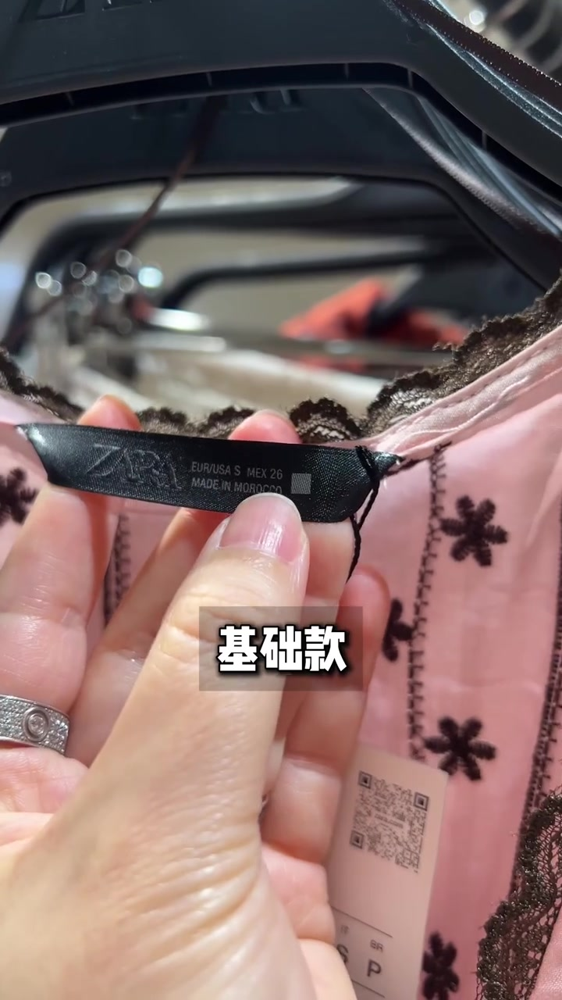
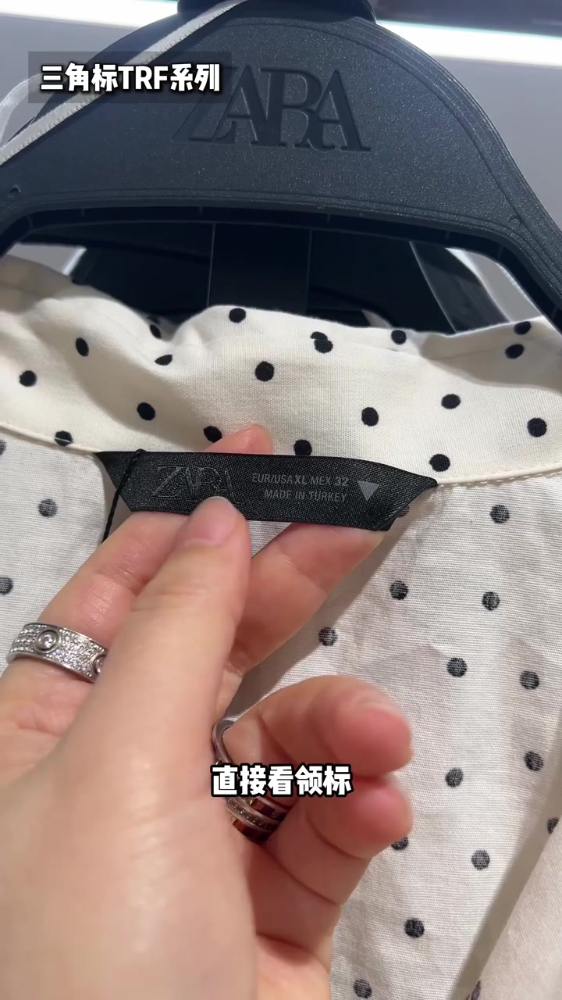
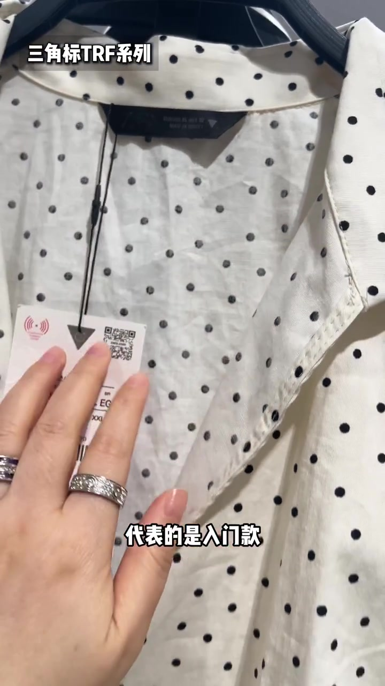
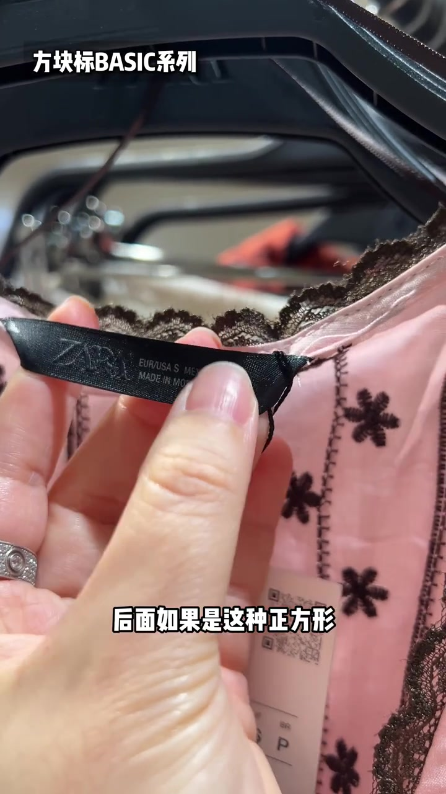
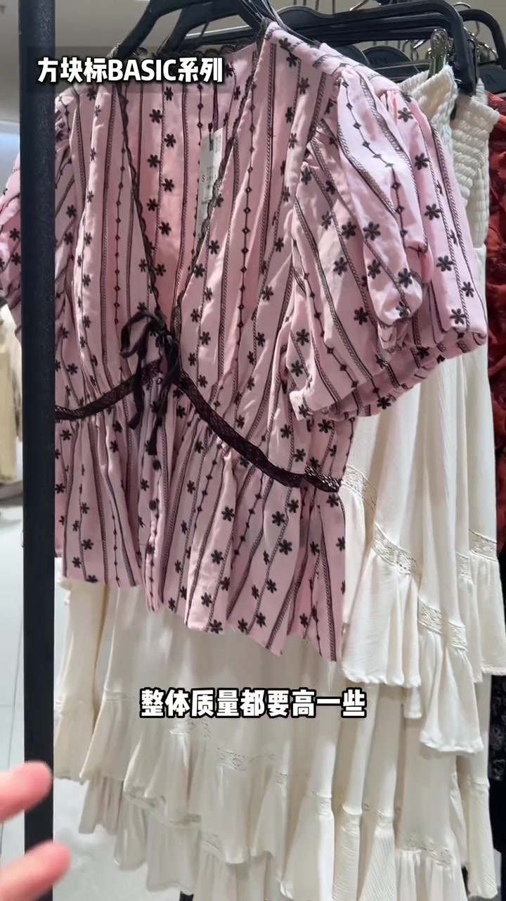
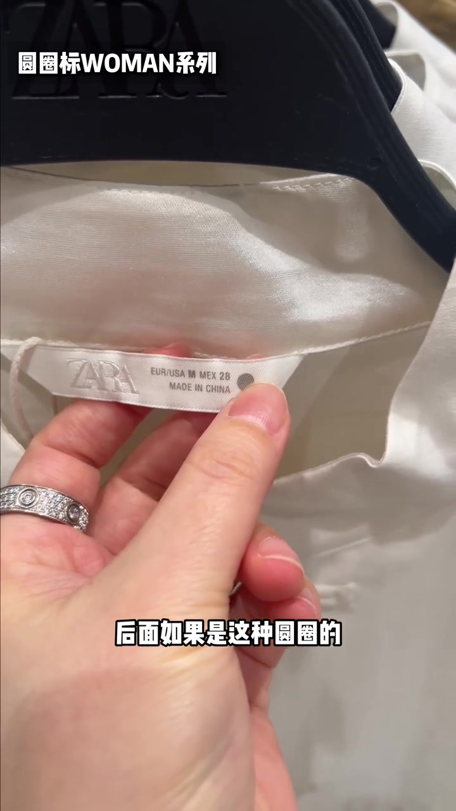
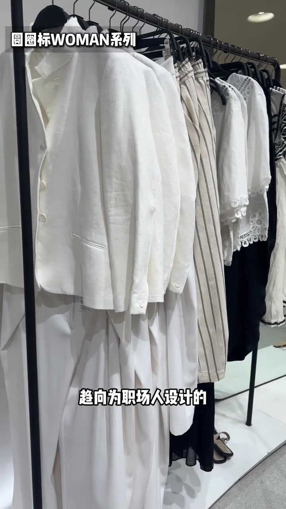
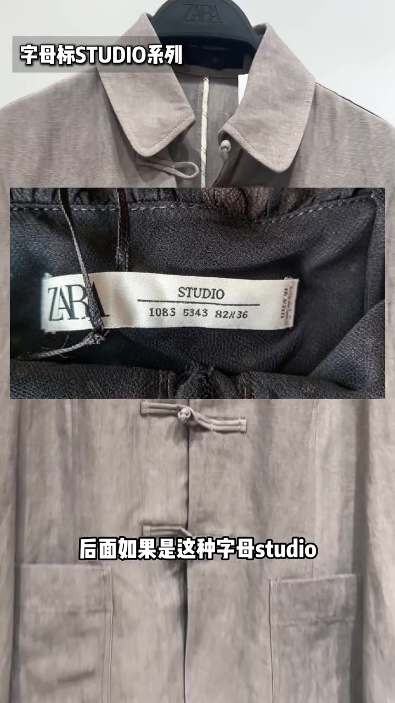

00:00–00:06
开场：先抛出四档，再把动作压成“看领标”
字幕一口气打出“入门款、基础款、质感款、高端款”，随即落到方法句：ZARA 应该这么逛——直接看领标。
话题标签也指向同一目标：干货收藏、买衣服不花冤枉钱、夏季穿搭与衣服测评。整条片子不是品牌软文，而是一套店内分流口诀。
可见字幕校正：Whisper 把“ZARA”听成“扎扎”，“领标”听成“顶标”。下文按画面字幕叙述，文末转录区仍保留原始分段。

[00:01] 开场四档之一：镜头贴近粉色上衣的 ZARA 领标，叠字先点出“基础款”。
One of four opening tiers: the lens nears a pink top's ZARA label, overlay first calling it a “basic piece.”

[00:05] 方法落地：翻开领标，左上角标注“三角标 TRF 系列”，底部字幕强调“直接看领标”。
Method applied: flip the neck label — the corner marks “triangle logo TRF series,” bottom subtitle stresses “just read the label.”
00:06–00:14
三角标 TRF：入门款，年轻潮流线，尺码偏小
若领标后方是三角形，视频把它归为入门款：质量一般，更偏年轻、潮流线，尺码通常偏小。画面同时翻到价格吊牌上的倒三角与 RFID 标记，把“三角”钉成可核对的视觉符号。
字幕校正：Whisper 将“质量一般属于鸡肋款/冲量款”一类表达听成“计刨营”，“更年轻潮流线”听成“对年轻 潮流下”。叙述以可见字幕“代表的是入门款”“款式一般更年轻潮流线”为准。

[00:08] 吊牌与领标呼应：黑色倒三角旁，字幕写明“代表的是入门款”。
Hang tag echoes the neck label: beside a black inverted triangle, the subtitle notes it “stands for the entry-level line.”
00:14–00:25
方块标 BASIC：基础款 / 标准款，店里主流、性价比更高
镜头切到粉色绣花上衣：领标右侧是灰色小方块，左上角叠字“方块标 BASIC 系列”。字幕解释——正方形代表基础款或标准款，整体质量高于三角标，偏日常，也是店里的主流款；相对来说款式更多、性价比更高。
接着拉远到货架：同系列上衣配白色层层长裙，底部字幕强调“整体质量都要高一些”。这里不再只看标签，而是把“基础款=可日常穿的主力货”落到成衣观感上。
字幕校正：Whisper 把“偏日常型”听成“偏日常现”，“性价比更高”听成“百分更多”。

[00:15] 方块标近景：字幕说“后面如果是这种正方形”。
Square-mark close-up: the subtitle says “if the back has this kind of square.”

[00:19] 拉开到成衣：BASIC 系列粉色上衣，字幕强调质量高于三角标。
Pulling out to the ready-made: a BASIC-series pink top, subtitle stressing quality over the triangle logo.
00:25–00:35
圆圈标 WOMAN：质感款，更偏职场与成熟合身线
白色柔光上衣的领标右侧是灰色圆点，左上角写“圆圈标 WOMAN 系列”。字幕说：圆圈代表偏质感款，版型、面料、做工都还不错；这类更多趋向为职场人设计，偏成熟线，合身款居多。
随后画面扫过一排白西装、条纹西裤与中性色连衣裙，把“职场向”从口号变成货架证据。
字幕校正：Whisper 将“版型”听成“反型”，“趋向为职场人设计的”听成“区域向职场人设计的”，“合身款居多”听成“合身款级多”。

[00:27] 圆圈标近景：拇指点着领标右侧的灰色圆点。
Circled close-up: a thumb points at the gray dot on the right of the neck label.

[00:33] WOMAN 系列货架：白西装与西裤，字幕落到“趋向为职场人设计的”。
WOMAN collection rack: white suits and trousers, with the subtitle landing on “designed toward professionals.”
00:35–00:47
字母标 STUDIO：高端线，对标设计师，售完不补
最后一档不是几何符号，而是领标正中直接印着 “STUDIO”。字幕纠正误听：后面如果是这种字母 studio，代表高端线 / 高端款；面料、版型、做工“全在线”，对标设计师线。
补刀也很干脆——这一类每个季节出得比较少，而且基本上售完不补。视频末尾切到电商搜索“zara studio”的商品流，把“高端线”与可搜到的 STUDIO 货盘并置，提醒：看到就要判断是否值得下手，别指望补货。
字幕校正：Whisper 把“这种字母 studio”听成“似模不似丢流”，“每个季节”听成“每个纪录”，“售完不补”听成“收完不补”。

[00:36] 字母标特写：领标中央印着 STUDIO，叠字标注“字母标 STUDIO 系列”。
Letter-label close-up: “STUDIO” printed in the center of the neck label, with the overlay noting “letter-label STUDIO series.”